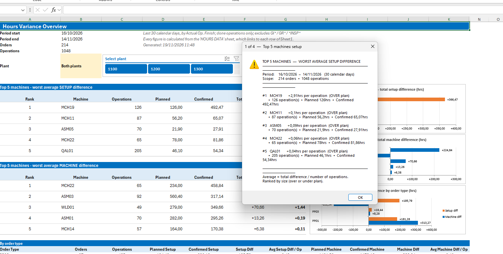

01
Production Variances
Problem
Hundreds of orders close with labour and material off standard. Management needs to know which orders matter, and the workshop needs to know which operation on which machine caused it.
What I built
- Stage 1 flags orders outside ±45% labour and ±20% material
- Stage 2 compares planned vs confirmed hours per operation, with department tabs and favourable variances
- A live overview with a plant slicer and dynamic-array Top 5 and Top 10 tables. Remarks survive a re-run.
A whole day of compiling → 10 minutes. Demo: 80 labour and 63 material orders flagged. MCH19 runs +2.9 h over on setup per operation, which points to a missing setup standard.